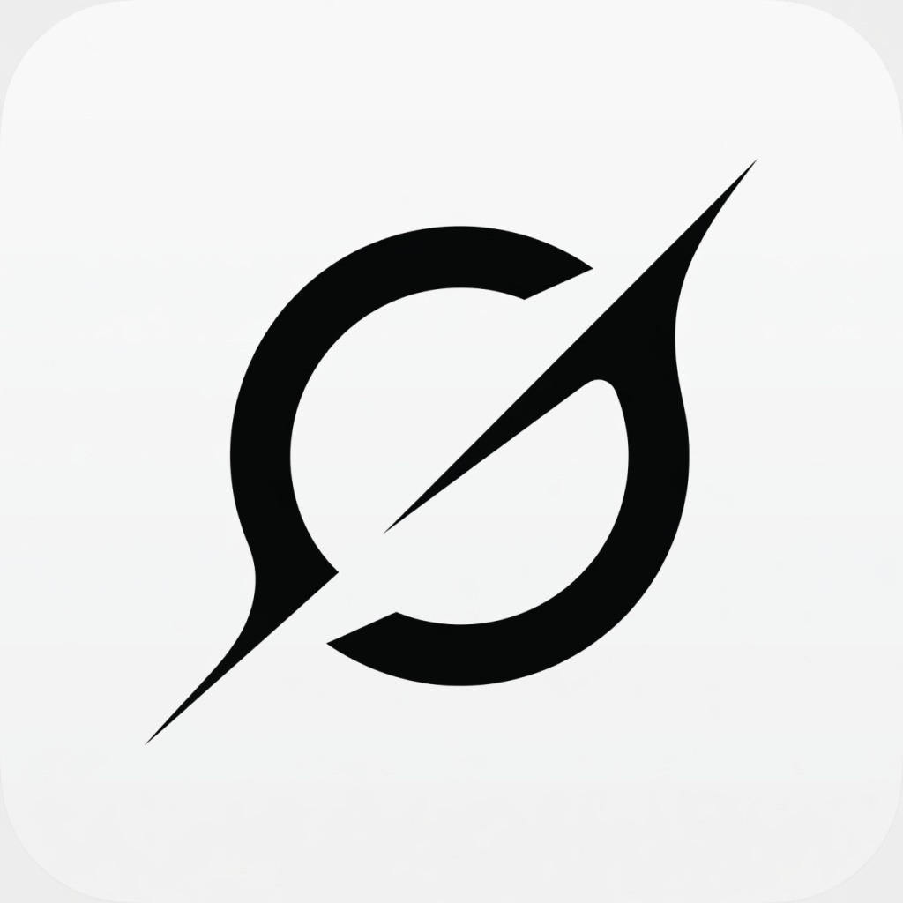

流式对话
思考可折叠，工具步骤可见，权限当场批，Plan 审完再动手。

OpenGrok点卡片填入输入框，确认后再发送。/ 命令，@ 文件。
本机工作台
界面吸收 Codex / Grok App 的三栏工作台，视觉是独立的 OpenGrok。Agent 运行时是你已经安装的 grok CLI。
工作台
流式对话、思考折叠、工具步骤、权限审批与 Plan 审阅，全部发生在本机窗口里。
思考可折叠，工具步骤可见，权限当场批，Plan 审完再动手。
/ 调命令，@ 附加工作区文件。点卡片填入输入框，确认后再发送。
会话、MCP、插件、工作树、记忆、配置与登录，都在左侧栏。
官方浏览器登录，或粘贴 console.x.ai 的 API Key。配额与账号显示在左下角。
桌面数据在 %USERPROFILE%\.opengrok，CLI 会话仍走 ~/.grok。
局域网或公开地址把工作台开给另一台设备。配对码才能改文件、跑命令。
三步
OpenGrok 不内置模型。它通过 ACP（grok agent stdio）驱动本机 grok。
Windows 用官方安装脚本。装好后本机已有 grok 命令与登录状态。
安装桌面端，选一个项目文件夹。数据留在本机，不经过第三方中转。
新会话、点卡片或直接输入。审查 diff，允许或拒绝工具调用。
获取
当前版本 0.4.0。安装包由 GitHub Actions 在 tag v* 时构建。也可从源码打包。
没有 CLI，窗口只是空壳。先装官方 CLI 并完成登录。
irm https://x.ai/cli/install.ps1 | iex
curl -fsSL https://x.ai/cli/install.sh | bash
在 OpenGrok 仓库根目录执行，生成当前系统的安装包。
npm install; npm run dev
npm run pack
说明
不是。OpenGrok 是独立桌面工作台，非 xAI 官方产品。Agent 运行时是你已经安装的 Grok CLI。
必须。窗口通过 ACP 连接 grok agent stdio。Windows 可执行：irm https://x.ai/cli/install.ps1 | iex
桌面偏好与项目数据在 %USERPROFILE%\.opengrok。CLI 会话、技能、MCP 仍走 ~/.grok。
Windows 10+（当前主平台），macOS Intel / Apple Silicon，以及 Linux x64（AppImage、deb、rpm、tar.gz）。
点右上角 中 / EN。选择会记在本机。软件设置里同样可以切换简体中文与 English。